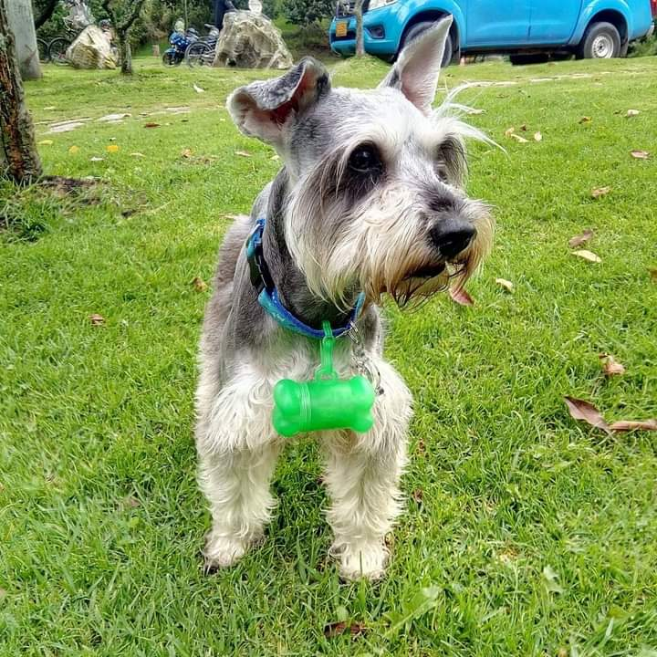

Hollman Andrey Arandia Pulido

Contacto:313 842 7753
Correo electronico: hollmanandrey1003@gmail.com
¿Por que estudio programación?
Actualmente busco mejorar mi perfil laboral y ampliar mis conocimientos.
El sector tecnologico siempre ha sido una de mis areas de intertes, pero para mi concepto el area de desarrollo es una de las mas fuertes en la actualidad, mi proposito es involicrarme totalmente con la programación y de esta manera dejar mis capacidades plasmadas.
Comidas favoritas
Trucha en salsa de champiñones